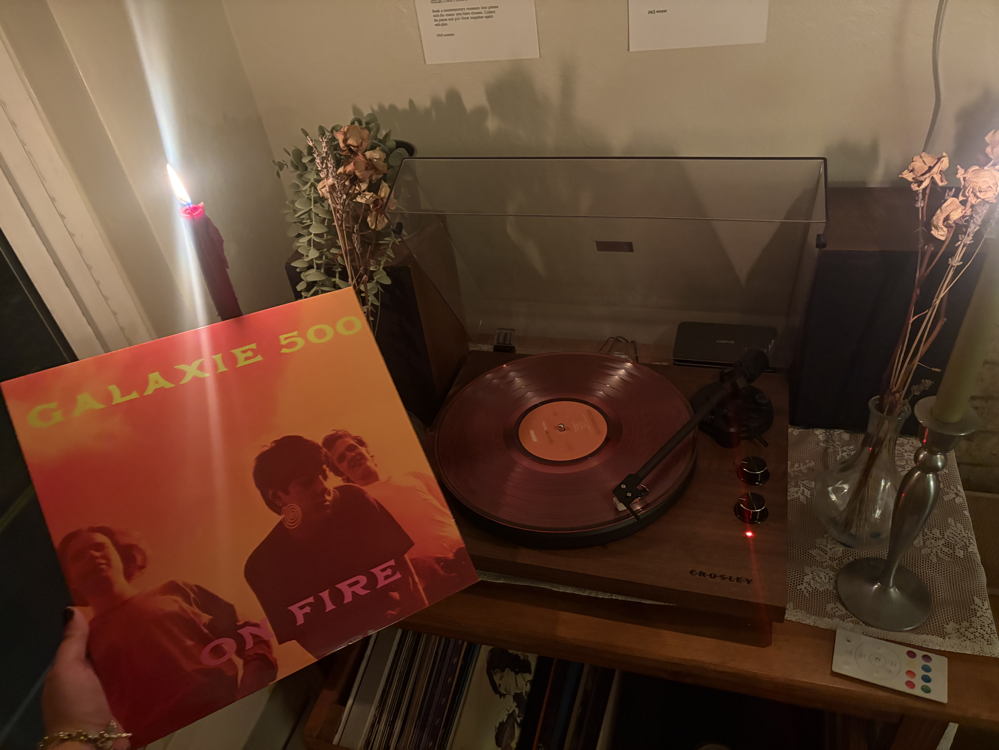
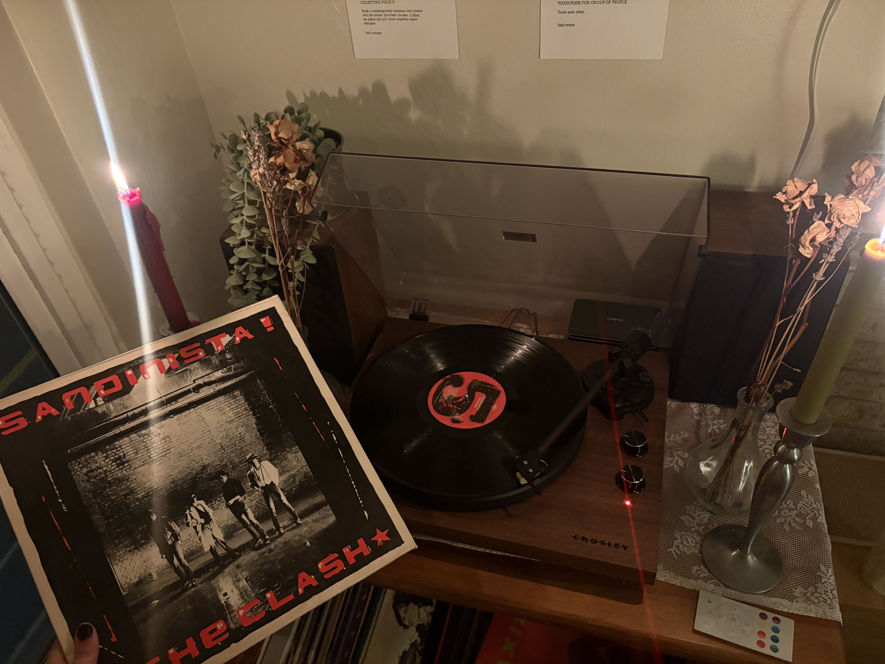
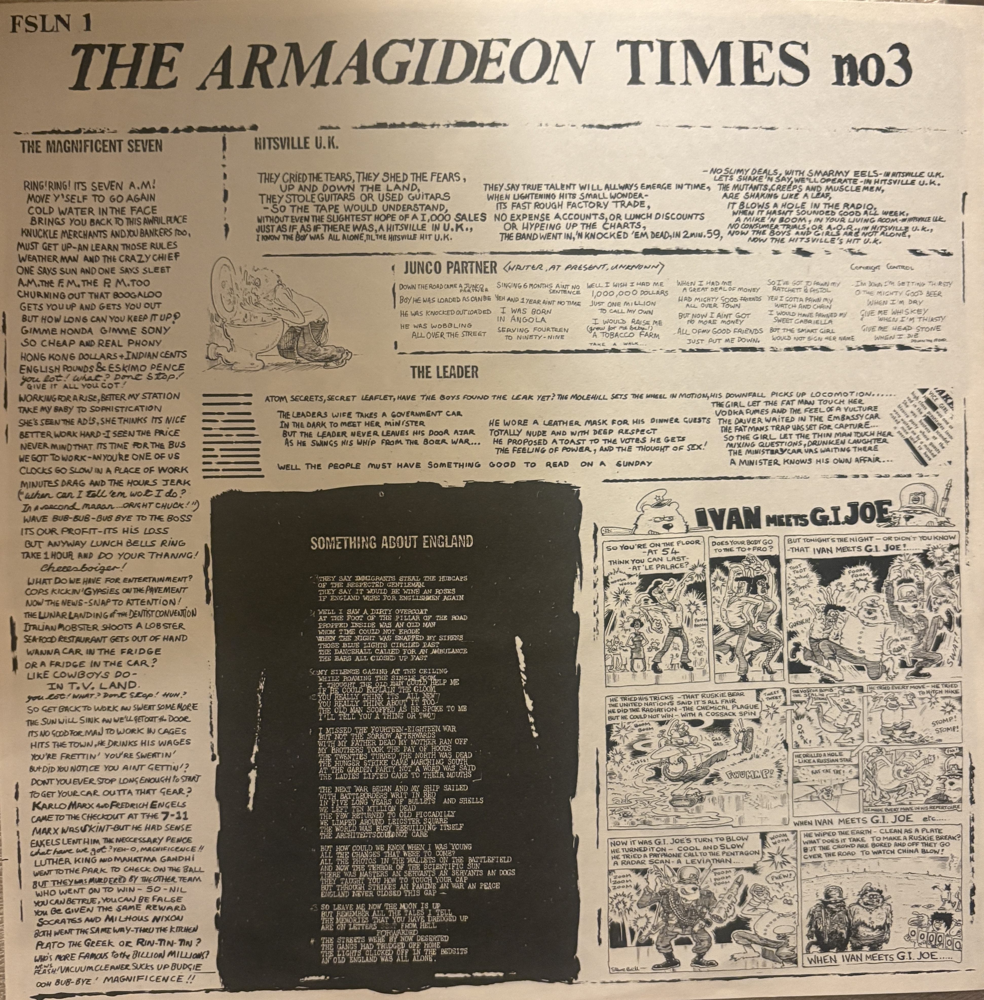
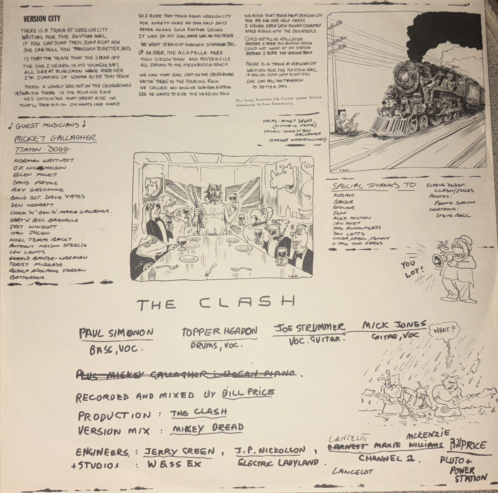
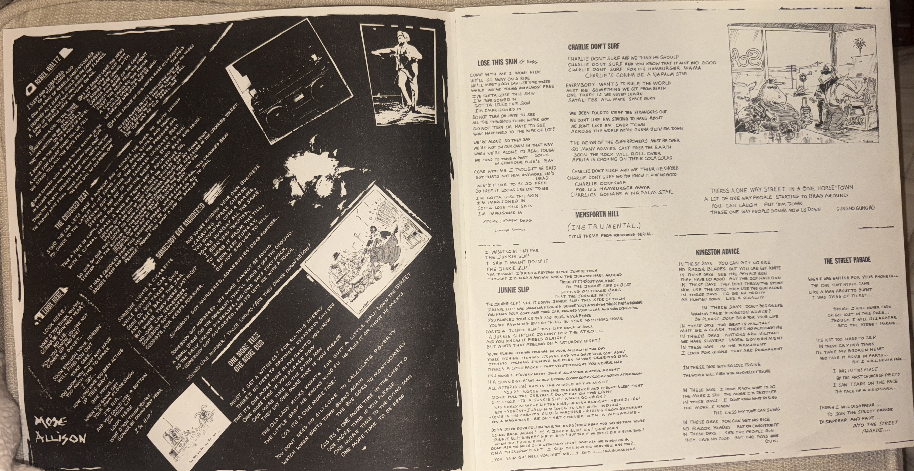
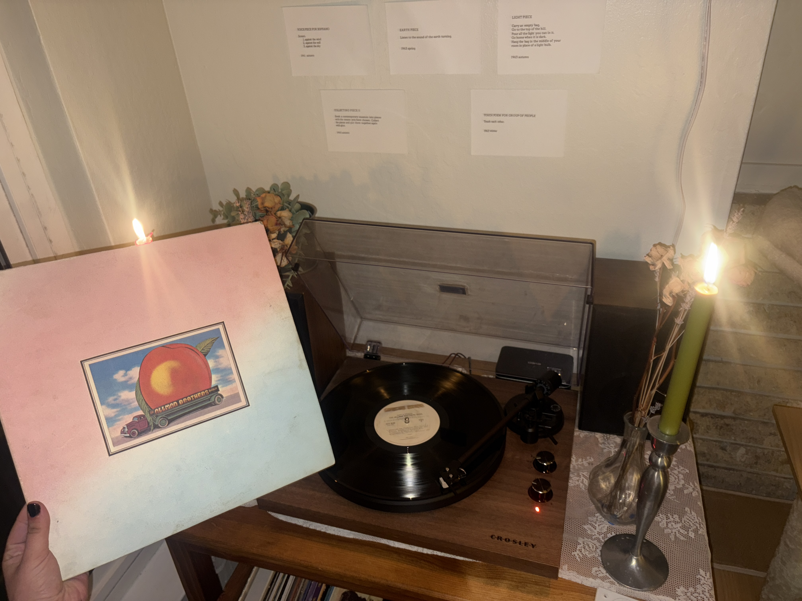

galaxie 500 on fire!
This is one of my favorite albums ever, I love the almost haunting melancholy feeling of the whole thing.
The music is slow and dreamy. The guitars have this hazy sound that makes everything feel a little nostalgic.
"Strange" is one of my favorite songs of all time. I love how it sounds kind of sad and makes me feel sad when
im already sad but its also comforting at the same time. The whole album has that feeling so I think it is
best listened to on vinyl. With candles lit. In a dim room. When I listen to it this way it feels like the
music becomes part of the atmosphere. By far this album is better on the vinyl. It sounds great on Spotify too
but its a vibe thing. I feel like having the record playing in the room makes the whole experience feel more
intimate. So, I do think the format fits the album better. The songs already just have such a distant and
dreamy quality that listening to them on a record feels right. With this record the setting matters just as
much as the music itself. I had a lot more fun listening on the record player.

the clash sandinista!
Sandinista! by The Clash has a lot of different sounds on it. Some songs are more punk but some have kind of
like reggae influence so the whole thing doesnt sound the same. The album has 36 songs. Which means in the
vinyl copy i got it came with 3 records. Lots of music to get thorough. My favorite part about this vinyl is
obviously the cover but also that it comes with a lyric insert that was supposed to look like a punk fan zine.
I like that vinyl comes with things like this. You get something physical to look through instead of just
seeing the song titles on a screen.



I had so much fun reading and looking at this insert. I honestly like listening to The Clash in my car while
I'm driving. Charlie Don't Surf is such a good car song to me. The benefit of Spotify is that it's portable.
The vibe can be caught anywhere. Since the vinyl comes with three physical records I had to spend more time
with the album and get up to change sides and records. I think that made me more aware of just how much music
is on it. On Spotify it's easy to skip songs or listen to whatever I want but with vinyl I was more likely to
listen to the songs in order. I didn't notice a huge difference in sound but I did notice that I listened to
it differently depending on the format.

allman brothers eat a peach
Eat a Peach by The Allman Brothers Band came out in 1972 and mixes Southern rock and blues. A family friend
gave me this album the day he found out I got a record player. So it already has a personal connection for me.
The album has both studio recordings and live performances. Some songs like "Melissa," are more relaxed but
"Mountain Jam" is like over 30 minutes long. Since the album has a mix of sounds and longer songs and my
personal connection to it I felt it would be a good album to explore for this review.
Listening to this album on vinyl made the live parts stand out to me. The music feels loose and almost like
you're actually there watching the band play. On Spotify I did like being able to listen through my headphones
and focus on the different instruments but on the record player its really true that the music filled my room
in a different way. I think it sounds cooler on the vinyl too. I also think knowing that a family friend gave
me this album makes listening to it more meaningful. It reminds me of why I wanted a record player in the first
place and why I love physical media so much. I feel like I have a deeper personal connection to what the thing
is whether its a magazine or a record. There's something special about putting on an album someone picked out
for you and listening to it on the format it was originally released on. And the specific vinyl is the same one
he had when he was younger (hes like 70) and he preserved it really well. So, for this album I preferred vinyl.